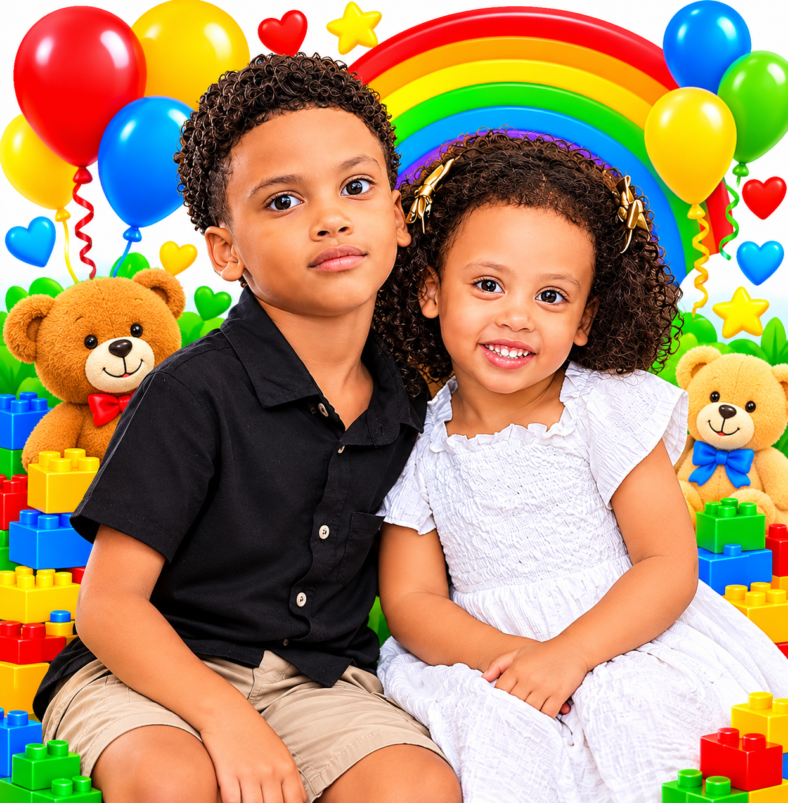

Meet Rodwann, the father. Robynn, the mother. Rogue, the protective big brother. And at the center of it all is Roma — our amazing 3-year-old daughter with autism.
Roma was diagnosed with autism at the age of two after we noticed repetitive movements, repetitive actions, and lots of sounds but no words. Since then, life has been one incredible, exhausting, hilarious, and beautiful rollercoaster ride.
Sleep? Well, Roma has her own ideas about that.
Most toddlers wake up and slowly ease into the day. Roma wakes up between 1 and 2 AM and immediately goes from 0 to 100. One minute the house is quiet, and the next she’s sprinting through the rooms making her signature calling noises like she’s training for the Autism Olympics. And naps? Those are her greatest enemy. The second she feels herself drifting off to sleep, she pops back up like Rocky Balboa in the final round. Just when you think she’s down for the count, she comes back stronger.
Her own way of telling us
Being non-verbal means Roma has become an expert communicator in her own unique way. She takes us by the hand and leads us exactly where she wants us to go. Sometimes it’s straightforward. Other times it’s a treasure hunt worthy of its own reality TV show.
She’ll lead us to the fridge, stare at us, and then the guessing game begins.
“Milk?”
No.
“Yogurt?”
No.
“Cheese?”
No.
“Do you want the fridge itself?”
Still no.
By the time we figure it out, we feel like we’ve won the grand prize on a game show.
Then there are textures. If Roma touches something she doesn’t like, the facial expression she gives deserves an Oscar. Pure, unfiltered disgust. It’s the kind of face that says, “How dare this object exist?”
Roma is also 100% a Daddy’s girl.
She sticks to me like a shadow. She can be in a room with her mom, happily playing, but the moment she realizes I’m somewhere else, she’ll launch a full-scale search mission. It’s like watching a Sentinel searching for Neo in The Matrix. She won’t stop until she finds me.
Crowded places aren’t her favorite. When we’re surrounded by lots of people, she’ll either fall asleep or bury her head safely between my arms, occasionally peeking out to make sure we’re still in the same place. It’s her way of checking that her world is still secure.
Of course, not every day is easy.
There are moments when we don’t understand what she needs. Moments when frustration builds and a meltdown arrives with the force of a volcanic eruption. But every challenge teaches us something new.
One day, we cracked the code.
A sensory brush and a few gentle strokes on her arm could help calm the storm.
Victory.
Parents of autistic children quickly learn that sometimes the smallest wins feel like winning the World Cup.
And then there’s her big brother, Rogue, age six.
Whenever we meet someone new, he proudly announces, “My sister is very special.”
He isn’t wrong.
The two of them play beautifully together—when Roma feels like it. Most of the time, their games involve running around for absolutely no reason, climbing over couches, and turning the living room into what looks like a ninja warrior obstacle course.

Through it all, Roma has taught us more than we could ever teach her.
- She has taught us patience.
- She has taught us understanding.
- She has taught us to celebrate progress, no matter how small.
- She has taught us that communication isn’t limited to words.
Most importantly, she has taught us to see the world differently.
Robynn calls herself the Queen.
Roma is our Princess.
And every day, we are privileged to be part of her kingdom.
Some days are incredibly tough. Some days are overwhelming. Some days leave us wondering if we’re doing enough.
But if given the choice, we wouldn’t trade Roma for anything.
Because autism isn’t a journey about changing who she is.
It’s a journey of learning who she is.
As Dr. Stephen Shore famously said:
“When you’ve met one person with autism, you’ve met one person with autism.”
Roma is uniquely Roma.
And that’s exactly what makes her extraordinary.
Welcome to Autism4us — a story of patience, love, laughter, late-night adventures, treasure hunts, volcanic meltdowns, unexpected victories, and one incredible little girl who makes our world brighter every single day.